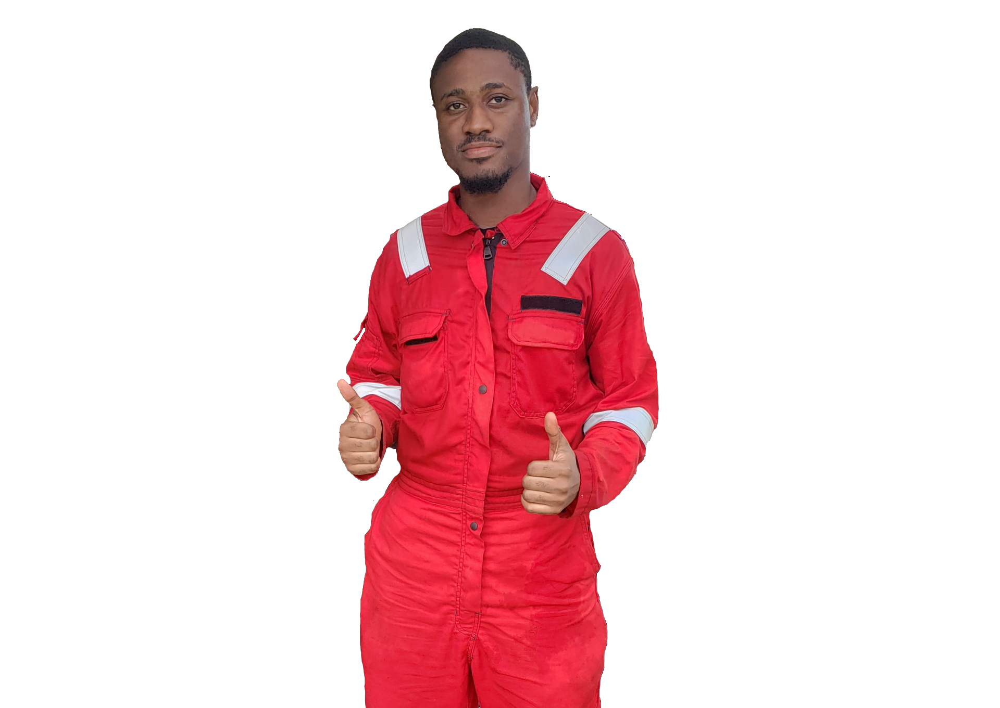

Hi, I’m Amo Nkansah, a Petroleum Engineering graduate currently working as an Operations and HSE Trainee at Ensol Energy Gh Ltd, an oilfield chemical solutions company.
With a strong interest in both engineering and safety, I’m building a career focused on operational excellence and real-world impact. My background in petroleum engineering, combined with hands-on experience in operations and HSE, has given me a deep appreciation for the practical challenges of the energy industry.
I enjoy solving technical problems whether it's modeling reservoir behavior with CMG, mapping out processes in Visio, or building smart tools with Power Platform and R to make daily operations smoother and safer.
What drives me is the opportunity to make a tangible impact: improving safety protocols, optimizing workflows, or simply making someone’s job easier through better systems. Every tool I learn and every project I take on is a step toward that goal.
Beyond engineering, I’m deeply passionate about economics, innovation, and creating meaningful impact. When I’m not working, you’ll likely find me immersed in a good book or enjoying a football match.
I’m always open to new challenges and opportunities to grow, collaborate, and make a difference.